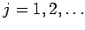
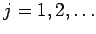

Inhalt Index DeskTop Bronstein

 Lineare Integralgleichungen Fredholmsche Integralgleichung 1. Art Konstruktion zweier spezieller Orthonormalsysteme zu einem gegebenen Kern
Lineare Integralgleichungen Fredholmsche Integralgleichung 1. Art Konstruktion zweier spezieller Orthonormalsysteme zu einem gegebenen Kern


Bestimmung einer normierten Funktion , die zu allen Funktionen aus  orthogonal ist. Für  werden jeweils die folgenden Schritte durchlaufen:
orthogonal ist. Für  werden jeweils die folgenden Schritte durchlaufen:
Das Verfahren wird so lange wiederholt, bis die Orthonormalsysteme vollständig sind. Es ist möglich, daß im Algorithmus von einem gewissen Schritt ab auch nach abzählbar unendlich vielen weiteren Schritten nicht der Fall b) eintritt. Ist die dabei erzeugte abzählbar unendliche Folge von Funktionen nicht vollständig, dann kann mit einer zu allen diesen Funktionen orthogonalen Funktion das Verfahren neu gestartet werden.
Werden die durch das Verfahren ermittelten Funktionen  sowie die Zahlen geeignet umbezeichnet, dann läßt sich die resultierende Kernmatrix
sowie die Zahlen geeignet umbezeichnet, dann läßt sich die resultierende Kernmatrix  folgendermaßen darstellen:
folgendermaßen darstellen:
Die Matrizen sind endlich, wenn im Algorithmus nach endlich vielen Schritten der Fall eintritt. Dagegen sind sie unendlich, wenn für abzählbar unendlich viele Schritte j gilt: . Die Anzahl der Nullzeilen bzw. Nullspalten in  entspricht der Anzahl der Funktionen in den Systemen
entspricht der Anzahl der Funktionen in den Systemen  bzw. . Ein besonders einfacher Fall liegt vor, wenn die Matrizen nur eine Zahl enthalten, also alle Zahlen gleich Null sind.
bzw. . Ein besonders einfacher Fall liegt vor, wenn die Matrizen nur eine Zahl enthalten, also alle Zahlen gleich Null sind.
Mit den Bezeichnungen aus dem Abschnitt Zurückführung der Integralgleichung auf ein lineares Gleichungssystem ergibt sich für die Lösung des unendlichen Gleichungssystems unter der Voraussetzung von fj=0 für :